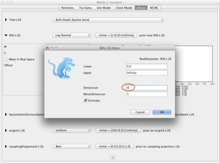

Birth--Death skyline (BDSKY) tutorialDenise Kühnert |
If you haven't installed BEAST2 yet, you can do that at beast2.org.
With BEAST2 installed, use the BEAUti2 add-on manager to add the BDSKY plugin as shown below. This automatically downloads the code and example files.
After restarting BEAUti and loading the alignment 26.nex, you should now be able to choose the BDSKY priors in the "Priors" tab:
The "origin" parameter is the duration of the epidemic represented by the samples at hand. This parameter MUST be larger than the tree height, which often leads to starting problems of the MCMC. If your initial tree is very large, you might have to start with an unrealistically large origin value to account for that.
The parameters needed for your BDSKY analysis depend on the sampling scheme used for your data. BEAUTI can set up analyses for data sampled serially over time ($ψ$-sampling, i.e. sampling at a rate $ψ$, see Section ??), or data sampled at one time point ($ρ$-sampling, i.e. all samples taken at one time point, see Section ??) and. Other sampling schemes may include multiple $ρ$-sampling events (see Section ??) or both serial and contemporaneous sampling, but this requires the user to edit the xml file by hand.
To be used when lineages are sampled serially/sequentially through time. The parameter $ψ$ is the sampling rate, the rate at which each lineage is sampled. The time tree would look like this:
The original parametrization of a birth--death--sampling tree prior consists of 3 parameters, a birth, a death and a sampling parameter. In case of serial sampling they are as follows:
Alternatively, they can be rewritten as follows:
This reparametrization enables direct estimation of $R$ and intuitive choice of prior distributions and is therefore implemented in BEAUti.
When parameters are multi-dimensional (i.e. at time $t_i$ the piecewise constant rates change from $R_i, δ_i, s_i$ to $R_i+1, δ_i+1, s_i+1$) the above operations are performed element wise.
Each parameter can have a different number of changes, specified through the dimension of the parameter. For example, let's say we want 4 intervals for R, 1 for the becomeUninfectiousRate and 2 for sampling:
| &  |
| & |
| & |
To be used when all samples are taken at a single time point, with the probability of each lineage being sampled at that time being $ρ$. The time tree would look like this:
When data is sampled contemporaneously, the sampling rate / proportion parameter is replaced by the sampling probability $ρ$ in either parametrization.
The parameter $ρ$ is the sampling probability, not to be confused with the sampling proportion (s), which is used for serially sampled data.
Choosing the number of intervals, starting values and prior distributions in BEAUTI works as for the serially sampled method, only that you now need to choose "Birth Death Skyline Contemporary" and the sampling proportion is set to 0, and the $ρ$ (rho) parameter is now included.
Sometimes multiple samples are taken at multiple time points, for example there might be a few samples taken at each of 3 sampling time points. Using $ψ$-sampling for this sampling scheme is incorrect and leads to the MCMC running and converging very slowly (if at all).
This scenario is not covered by BEAUti. The user can create the XML with BEAUti choosing Birth--Death Skyline Contemporary and then edit the XML file as outlines in the following.
The BDSKY distribution blog in your xml file may then look like this:
The times at which samples are taken are specified using:
With reverseTimeArrays being set to "true", the sampling times are specified from the time of the last sample (backward in time), rather than forward in time starting at the root (which is the default).
Here, $ρ$ (rho) has dimension 1, which means that at each sampling time the probability to be sampled is equal. If one expects them to be different, the dimension can be set to the number of sampling times (3 in this case).
Please do not just use the default prior distributions in BEAUti! They might be unsuitable for your data!
For infectious diseases the meaning of the effective reproduction ratio $R$ is straight forward, which should facilitate the prior choice. In other applications one might have to find out what corresponds to an infection or transmission.
The sampling proportion is well understood for example in HIV. In developed countries, percentages as high as 70 per cent infected individuals are sampled. Such information can be used to inform the prior distribution for $s$. Due to the parameter correlations discussed in [, SI] it is important to choose the BDSKY prior distributions carefully and to use all available information.
To plot your results use the R script bdsky_plot_2.1.1.R in the doc folder.
Start R from Terminal and run script with commandline: source(bdsky_plot_2.1.1.R)
Input:
Assumptions:
Windows users, please set usingMacTerminal=0 in the R file to enter input manually.
This document was translated from LATEX by HEVEA.